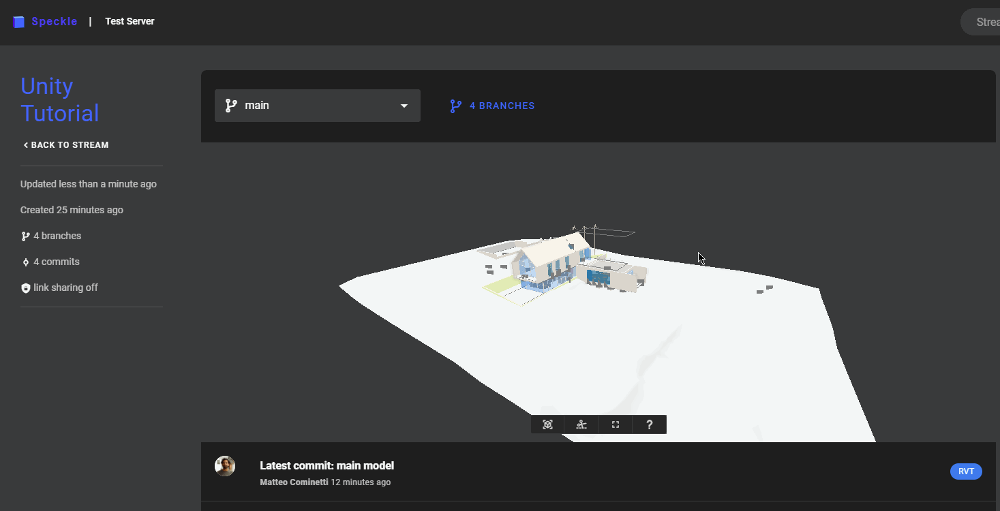

# Create Interactive Real-Time Experiences with Unity, Revit and Rhino
NOTE ❗️
All our tutorials have been migrated to out tutorials portal! Check them out 👉 Tutorials (opens new window)
Level: Advanced
Author: Matteo
Software used: Unity, Revit 2021, Rhino 6-7
In this tutorial we will create an interactive Unity app that renders Revit data in real time. We'll see how the Unity connector works and how to write custom code that pulls data from Speckle that originates in Revit and Rhino. We'll also see how to work with streams and branches to organize data.
The Unity Connector is evolving fast 🏃♂️! To follow this tutorial it is recommended that you pull the version at the start commit as future versions might be different.
- Start commit (opens new window) - use this if you want to follow along with this tutorial.
- End commit (opens new window) - the finished version, if you just want to skip to the end!
# Preparing the Models
The Unity app we are writing will let users receive (download) into their scene any model they have available in their Speckle account.
# In Revit
Assuming you don't already have a model, let's go ahead and set one up. We'll be using the most boring model ever, the Revit Basic Sample File - of course, you can use a different project!
You can also just download a copy of the model (opens new window) with the required edits already applied.

TIP
If using a Revit model, you'll need to edit the door families so that they are open, this will let you walk through the model instead of just... slamming into it!
We'll use this model for a walkthrough, but we'll want to let the users dynamically replace some of its components. In this case, I decided the big fireplace in the living room is a good candidate. Let's go:
- Select it
- Open the Revit Connector
- Create a new stream and then a new branch named 'fireplace'
- Click on 0 objects and then Set selection
- Now click send

Now let's delete the fireplace and send the entire model:
- Delete the fireplace
- Select the entire model
- Select the main branch
- Set the selection again and click send
# In Rhino
We'll use Rhino to create some alternative "furniture" to use instead of the fireplace, here you can get creative!
It's important that this new geometries are located exactly where the fireplace is, so first receive that by using the Grasshopper or Rhino connectors and use it as a base to align the other objects you're creating.
You can download the two geometries I'm using from this Rhino 7 file (opens new window).
TIP
Remember to set your desired materials on the objects before sending them.
Now we can send both the bunny and the statue to the same stream we created in Revit, but each in its own branch.

# In the 3D Viewer
If you've followed all the steps correctly, this is what you should have when viewing the stream online.

# Writing the Unity App
# Preparing the Scene
Back in Unity, we can start to work off the SpecklePlayground scene.
We'll need to add a first-person controller. I downloaded this simple one from the asset store (opens new window).
We can then disable or delete any other game objects not needed for this tutorial:

I've also enabled Global Illumination to make everything look nicer.
# Adding Custom Logic
Since most of the logic to receive streams and to create UI components already exists in the scene, we just need to add a small script.
Create a Tutorial.cs file with the following content:
using UnityEngine;
public class Tutorial : MonoBehaviour
{
private bool _uiMode = false;
public GameObject UI;
public GameObject Controller;
private CanvasGroup _canvas;
private MonoBehaviour _cameraScript;
void Start()
{
_canvas = UI.GetComponent<CanvasGroup>();
_canvas.alpha = 0.5f;
_cameraScript = Controller.GetComponentInChildren<FirstPersonLook>();
}
void Update()
{
if (Input.GetKeyDown(KeyCode.E))
{
_uiMode = !_uiMode;
_cameraScript.enabled = !_uiMode;
_canvas.alpha = _uiMode ? 1 : 0.5f;
Cursor.lockState = _uiMode ? CursorLockMode.None : CursorLockMode.Locked;
}
}
}
2
3
4
5
6
7
8
9
10
11
12
13
14
15
16
17
18
19
20
21
22
23
24
25
26
27
28
29
30
This example script enables and disables edit mode upon pressing of the E key.
Create a new game object and attach the script above to it. That's it - your app is now complete 😃
TIP
Please Note: When adding a receiver, if you leave "Auto Receive" checked, the geometry will be automatically updated as soon as a new commit is pushed to that stream/branch.
# Further Developments
This app is an oversimplification of what a proper interactive real time app would look like... but it's a great starting point!
The UI and logic can be completely customized. A good starting point for this would be looking into the SpeckleExamples.cs class or the prefabs used for the UI components.
For instance, you could perform different actions when the data is received or consume the Revit metadata attached to the objects with a script. Instead of having the stream cards custom for a UI, custom buttons could be added to pull a specific commit and model.